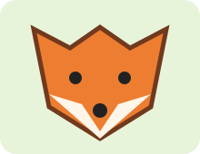
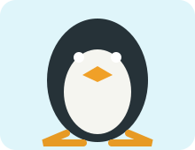

В нашем зоопарке живут необычные животные. С каждым из них однажды произошла забавная история.

Кот-фотограф
Кот Рыжик увидел, как посетители фотографируют животных, и решил попробовать сам. Он случайно нажал лапой на кнопку телефона и сделал десять одинаковых фотографий своего носа. Смотритель сказал, что это первая кошачья выставка автопортретов.

Лиса и расчёска
Лиса Алиса нашла возле вольера расчёску. Она долго пыталась понять, зачем она нужна, а потом причесала ею свой пушистый хвост. Хвост стал таким большим, что маленькие посетители приняли его за отдельное животное.

Пингвин-почтальон
Пингвин Пончик любил собирать записки посетителей. Однажды он разнёс их по всему вольеру: рыбам досталось приглашение на прогулку, а смотрителю — просьба принести селёдку. С тех пор Пончика называют главным почтальоном зоопарка.